Inhalt Index DeskTop Bronstein

 Algebra und Diskrete Mathematik Fuzzy-Logik Grundlagen der Fuzzy-Logik Fuzzy-Mengen
Algebra und Diskrete Mathematik Fuzzy-Logik Grundlagen der Fuzzy-Logik Fuzzy-Mengen


| 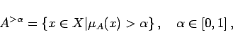 | (5.364a) |
bzw. scharfer  -Schnitt 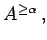 falls gilt
-Schnitt 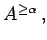 falls gilt
| 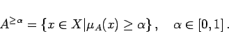 | (5.364b) |
| 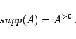 | (5.364c) |
| 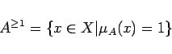 | (5.364d) |
heißt Toleranz von  .
.
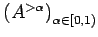 und 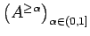 ihrer  -Schnitte und scharfen
-Schnitte und scharfen  -Schnitte zuordnen.
-Schnitte zuordnen.
Die  -Schnitte und scharfen
-Schnitte und scharfen  -Schnitte sind monotone Familien von Teilmengen über X, für die gilt:
-Schnitte sind monotone Familien von Teilmengen über X, für die gilt:
| 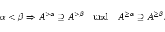 | (5.364e) |
Existieren umgekehrt monotone Familien 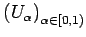 oder 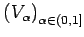 von Teilmengen über X, so entspricht diesen je genau eine unscharfe Menge U bzw. V über X, so daß stets 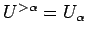 und 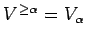 gilt und
| 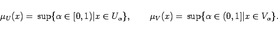 | (5.364f) |